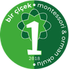

Ebeveyn
Evde Montessori uygulamak, doğru okulu seçmek ve çocuğunu daha iyi anlamak istiyorsun.
- Evde hazırlanmış ortam rehberleri
- Yaşa göre etkinlik önerileri
- Okul seçimi ve soru-cevap desteği
Ebeveynler ve öğretmenler için Türkçe içerik kitaplığı, canlı seminerler ve soru sorabileceğin gerçek bir topluluk. Montessori yolculuğunda yalnız değilsin.
Topluluk üç yol üzerine kurulu. Üye olurken birini seçersin; kitaplık, seminerler ve öneriler sana göre şekillenir.
Evde Montessori uygulamak, doğru okulu seçmek ve çocuğunu daha iyi anlamak istiyorsun.
Sınıfını geliştirmek, pedagojini derinleştirmek ve meslektaşlarınla bağ kurmak istiyorsun.
Montessori'yi yeni keşfediyorsun; temelleri sağlam kaynaklardan öğrenmek istiyorsun.
Blog yazıları, podcast bölümleri ve videolar tek kitaplıkta. Her hafta yeni içerik ekleniyor.
Dünyadaki büyük Montessori topluluklarının Türkiye'de karşılığı yoktu. Şimdi var.
Aklına takılanı sor; ebeveynler ve öğretmenler deneyimleriyle yanıtlasın. Yalnız Google'a kalma.
Her ay ücretsiz online seminerler ve atölyeler. Kayıt profil sayfandan tek tıkla.
Okudukça, katıldıkça rozet kazan. Montessori yolculuğun profil sayfanda birikiyor.
İndirilebilir rehberler, kontrol listeleri ve materyaller. Üyeler katkıda bulunur, havuz büyür.
Tüm seminerler online ve üyelere ücretsiz. Kontenjan dolmadan yerini al.
Bu topluluk, İstanbul Tuzla'daki Bir Çiçek Koleji Anaokulu'nun deneyiminden doğdu. MACTE sertifikalı Montessori programı ve akrediteli orman okulu — teoride anlattığımız her şeyi her gün sınıfta yaşıyoruz.

"Her bahar bir çiçekle başlar."
Tuzla Aydınlı, İstanbul
Kardeş sitemiz evdemontessori.com'da yaşa uygun, gerçek Montessori materyalleri ve ev için danışmanlık var. Topluluk üyelerine özel indirimler yakında.
Mağazayı Gez →Kayıt 2 dakika sürer. Kredi kartı yok, gizli ücret yok — Türkiye'nin Montessori topluluğu herkese açık.
Topluluğa Katıl — ÜcretsizZaten üye misin? Giriş yap